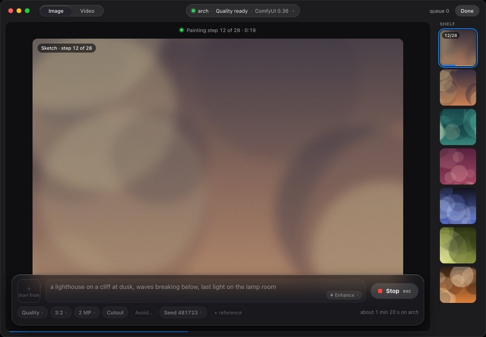
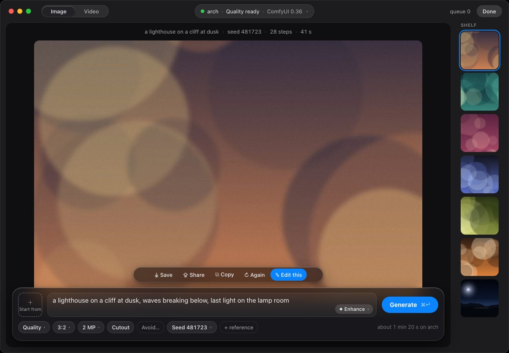

ReconnectScheduler applies ±40% jitter to the 400 ms base delay, so the worst case is 560 ms — past the test’s 500 ms ceiling. Pin it in tests:ReconnectScheduler applies ±40% jitter to the 400 ms base delay, so the worst case is 560 ms — past the test’s 500 ms ceiling. Pin it in tests: